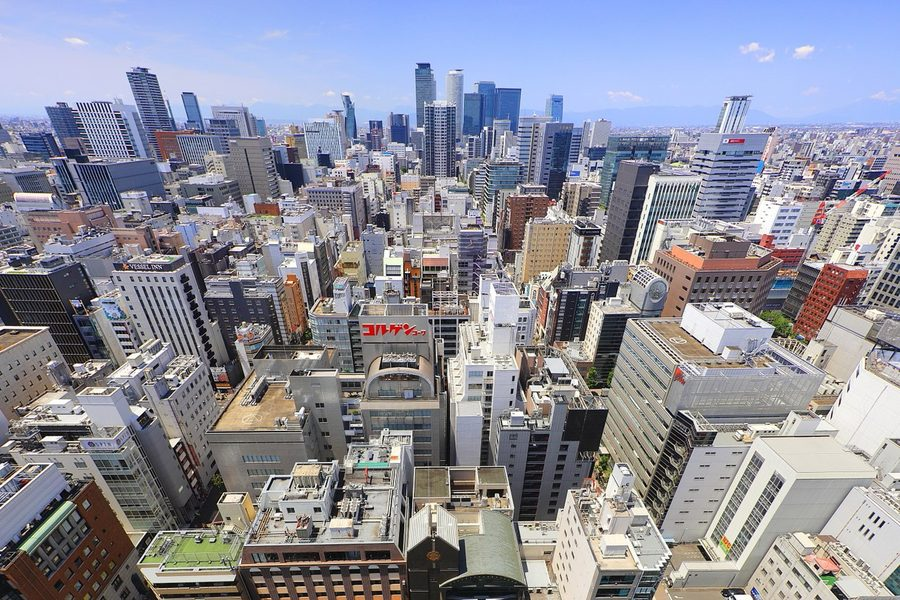
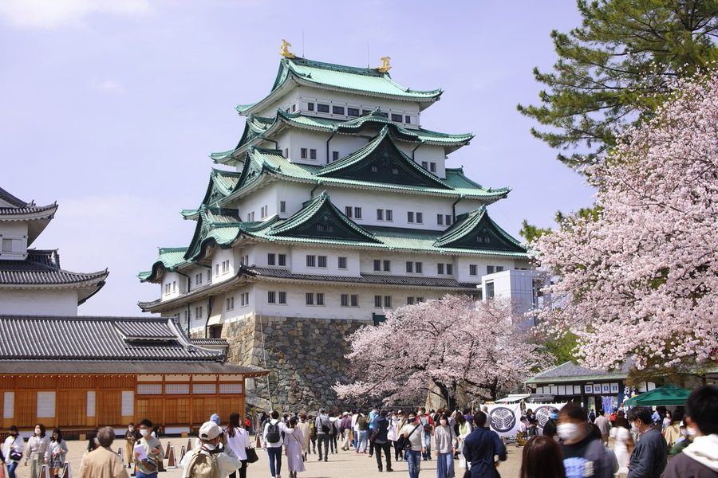
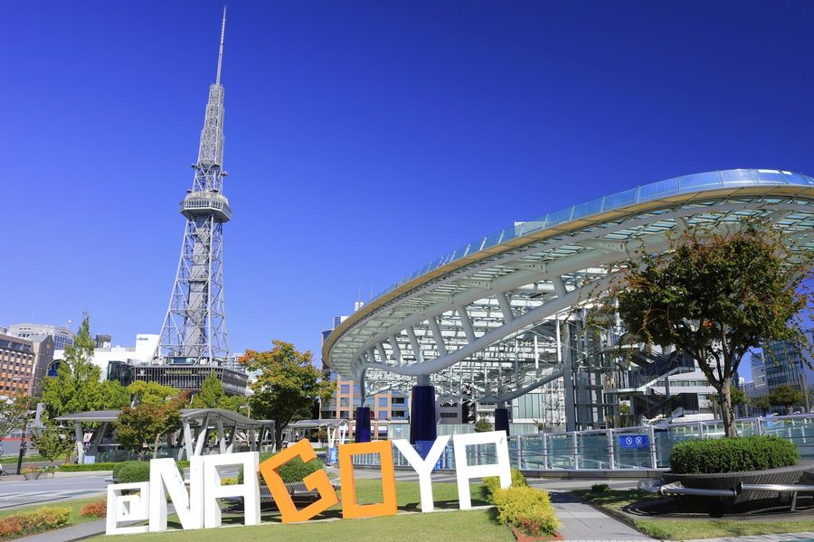
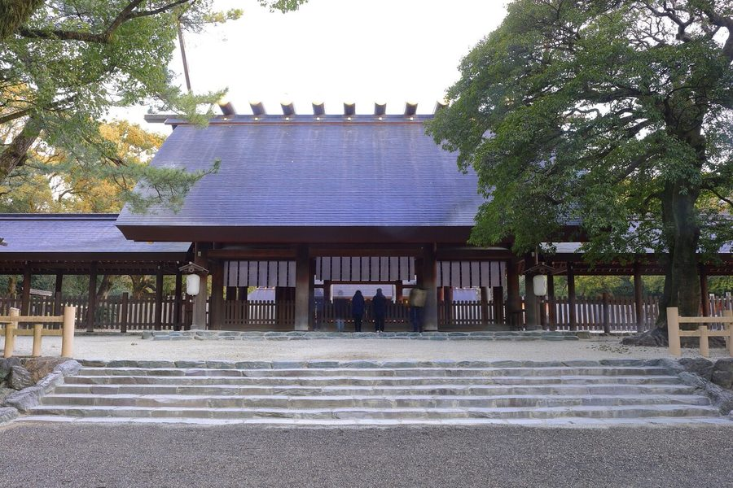

愛知県名古屋市の日帰り温泉・銭湯・サウナ（85件）
寄り道スポット検索アプリ「ヨッテコ」の収録データから、愛知県名古屋市の日帰り温泉・銭湯・サウナを営業時間・料金つきで一覧にしました（2026年8月時点）。
最も安いのは白山温泉（200円）。最も遅くまで入れるのはプライベートサウナM saunaM（翌5:00まで）。朝風呂ならRAKU SPA GARDEN 名古屋（5:00開店）。
愛知県名古屋市はどんなまち？
数字で見る🔍愛知県名古屋市
まちの横顔




- 気候: 温暖湿潤気候（Cfa）に属し、年平均気温は16.2℃です。平年値で猛暑日15.0日、真夏日69.7日、夏日138.2日、熱帯夜25.6日となる一方、真冬日は0.0日。夏季は40℃以上を観測することもあり、2018年8月3日には40.3℃を記録しました。年平均降水量は1578.9mm、年平均日照時間は2141.0時間です。
- 観光: 三種の神器のひとつ草薙剣を祀る熱田神宮の鳥居前町として発展し、江戸時代には尾張徳川家の名古屋城の城下町として栄えました。中心市街地の栄エリアには市のシンボルである名古屋テレビ塔や久屋大通公園があり、名古屋駅周辺の名駅エリアは2000年代以降の再開発で高層ビル街に変貌しています。日本に3つしかない100メートル道路のうち2つ（久屋大通・若宮大通）が市内にあります。
- 産業: 自動車工業都市の豊田市などとともに、日本最大の工業地帯である中京工業地帯の中枢を担い、年間3兆円を超える重工業都市です。名古屋港は日本を代表する国際貿易港で、2018年の取扱貨物量および貿易額は日本一。江戸時代には名古屋友禅など独自の産業技術が育まれ、2008年にはユネスコのデザイン都市に認定されています。
寄り道充実度（全国偏差値）
偏差値・順位は、ヨッテコ収録データ（2026年8月時点・26,033件）を市区町村別に集計した施設数の全国分布（1,728市区町村）から毎回算出しています。カードを押すとカテゴリ別の分析に切り替わります。
日帰り温泉から見た愛知県名古屋市
市内の日帰り温泉は85件、全国12位（上位0.7%）。——数のうえでは、はっきり湯の多いまち。
- 露天風呂がある店は32%で、全国水準（46%）を下回ります。露天よりも内湯——建物のなかでゆっくり浸かる湯が主流のようです。
- 源泉を使う店は20%にとどまり、全国の67%を下回ります。草薙剣を祀る熱田神宮の鳥居前町として、また尾張徳川家の名古屋城下町として栄えた都市。湧いている湯よりも、通いやすさで選ばれる施設が多いということになります。
- サウナ併設は86%。全国の52%を1.7倍上回ります。年平均気温16.2℃、夏日138.2日・熱帯夜25.6日を数える温暖湿潤気候の都市。湯とサウナをセットで考えるまち、と言えそうです。
- 夜の遅い時間に入れる店は82%。全国の40%を上回ります。夜型の寄り道がしやすいまち、ということになります。
- 入浴料（判明74件）の中央値は550円。全国（650円）より15%安めです。550円を目安にしておけば、多くの店で足ります。
出典: 施設データ=ヨッテコ収録データ（26,033件・2026年8月時点）。偏差値・全国順位・全国水準は全1,728市区町村の分布から毎回算出。 / 人口=総務省「住民基本台帳に基づく人口、人口動態及び世帯数」（2026年1月1日現在） / 面積=国土地理院「全国都道府県市区町村別面積調」（2026年4月1日時点） / 年平均気温=日本語版Wikipedia「名古屋市」（https://ja.wikipedia.org/wiki/名古屋市、2026年8月21日取得） / まちの解説=同記事より作成（CC BY-SA 4.0） / 写真=Wikimedia Commons（各キャプションに作者・ライセンスを記載）
曜日別の営業施設数
| 月 | 火 | 水 | 木 | 金 | 土 | 日 |
|---|---|---|---|---|---|---|
| 74 | 78 | 77 | 79 | 78 | 84 | 83 |
月曜日が最も休みが多く（各11件が定休）、年中無休は48件です。※営業時間データのある85件で集計
入浴料金の分布（大人）
| 500円以下 | 1件 | |
| 501〜800円 | 42件 | |
| 801〜1,200円 | 8件 | |
| 1,201円以上 | 23件 |
料金が確認できた74件で集計。
施設一覧
| 施設 | 営業時間 | 料金（大人） |
|---|---|---|
| ABホテル名古屋栄 天然温泉 | 09:00〜18:00 | — |
| Canal Resort キャナル・リゾート 天然温泉露天風呂サウナ | 09:00〜24:00 ※曜日により異なる | 900円 |
| Hot Rockin’ SAUNA サウナ 名古屋・栄錦の地下に位置する完全予約制の貸切サウナ。施設全体を最大6名で貸し切り利用でき、男女混合でも利用可能。深夜営業… | 12:00〜24:00 | 3,000円 |
| KIWAMI SAUNA サウナ | 07:00〜25:00 | 1,600円 |
| KIWAMI SAUNA 大須 サウナ | 00:00〜24:00 | 1,800円 |
| NAGONO WORK BAR & SAUNA なごのサウナ サウナ 名古屋の商店街に隣接する完全貸切プライベートサウナ。フィンランド式の本格サウナ、セルフロウリュウと高級スピーカーでの音響… | 10:00〜22:00（月・日休） | — |
| PRIVATE SAUNA ZICCAサウナ サウナ 名古屋港の個室サウナ。5つの異なるコンセプトの個室を備え、予約時に温度を指定できる業界初のサービスを提供。男性専用と女性… | 09:00〜21:00（月休） | 5,000円 |
| RAKU SPA GARDEN 名古屋 天然温泉露天風呂サウナ 天然温泉をはじめ、12種類の浴場、5種類の岩盤浴、5万冊以上のコミック、充実した食事処を備えた大型スパ施設。 | 09:00〜26:00 ※曜日により異なる | 1,800円 |
| SAUNA MONKEY サウナ 名古屋駅より徒歩5分に位置するサウナ施設。完全に区切られた専用空間で温度・湿度を精緻にコントロール。天候に左右されない内… | 09:00〜24:00 | 1,800円 |
| SAUNA. サウナドット サウナ 名古屋・栄の超狭小プライベートサウナ。日本初のケロ古木を使ったセルフロウリュウサウナ、東海初のバイブラ付き水風呂2種類を… | 12:00〜24:00 | 2,640円 |
| SENSE sauna センスサウナ名古屋 サウナ 名古屋駅徒歩6分の都心型サウナ。宇宙をテーマとした4つのサウナ室と個室を備え、ロウリュ、カフェ、コワーキングなどで。 | 00:00〜24:00 | 1,700円 |
| SLOW ART CENTER NAGOYA CRED SPA SAUNA サウナ 名古屋栄駅徒歩30秒の都心型プライベートサウナ。38名まで利用可能な大型サウナと複数の完全個室プライベートルームを備え、… | 11:30〜23:00 | 1,200円 |
| SPA & LIVING 天然温泉 アーバンクア 天然温泉露天風呂サウナ 名古屋市街地の複合温泉・サウナ施設。低張性弱アルカリ性の天然温泉と3種類のサウナ、岩盤浴を備えています。 | 06:00〜25:30 ※曜日により異なる | 1,050円 |
| SaunaLab Nagoya サウナラボ名古屋 サウナ 男女共用および専用サウナを備えた施設。フィンランドを代表するマッカラなどの食事が楽しめるほか、ウィスキングなど特別な施術… | 12:00〜21:00（火休） | 2,700円 |
| TENET SAUNA サウナ 名古屋市中区栄の個室サウナ。『Private Sauna EXIT』から生まれ変わった施設。よもぎを使用した特別な温度設… | 12:00〜28:00 | 4,000円 |
| TOBE SAUNA 飛べサウナ サウナ 名古屋市中区の個室プライベートサウナ。本格フィンランド製バレルサウナを導入し、完全個室で専用空間を提供。酵素ボックスやコ… | 11:00〜24:30 | 5,000円 |
| ぽかぽか温泉 新守山乃湯 露天風呂サウナ 名古屋市守山区にあるオートロウリュサウナで人気の日帰り入浴施設。露天水風呂は天然地下水掛け流し。 | 06:00〜25:00 | 530円 |
| アパホテル 〈名古屋栄〉 天然温泉露天風呂 | 09:00〜18:00 | 4,500円 |
| アパホテル 〈名古屋駅前〉 露天風呂 | 09:00〜18:00 | 4,500円 |
| アパヴィラホテル 名古屋丸の内駅前 天然温泉露天風呂サウナ | 09:00〜18:00 | 4,500円 |
| エクセルイン名古屋熱田 川の湯 サウナ 熱田神宮参拝者が身を清めた旧東海道の歴史的な場所に位置するホテル内のサウナ・バス施設。温冷浴体験をおすすめする本格的なサ… | 17:00〜24:00 ※曜日により異なる | 1,500円 |
| カプセル＆サウナ フジ栄 サウナ | 06:00〜24:00 | 2,500円 |
| グリーンリッチホテル名古屋錦 人工温泉・二股湯の華 | 09:00〜18:00 | — |
| サウナ＆カプセルホテル ウェルビー今池 天然温泉露天風呂サウナ 名古屋栄のサウナ＆カプセルホテル。東海地区最大規模の男女共用サウナと、名湯・池田さくら温泉を源湯にした「霞の湯」の露天風… | 00:00〜24:00 | — |
| サウナ＆カプセルホテル ウェルビー栄 サウナ 東海地区最大規模のサウナシアター名古屋を備えた施設。約70名が同時入室できるサウナ室で日々アウフグースなどのプログラムを… | 00:00〜24:00 | 2,000円 |
| スーパー銭湯 桃山の湯 露天風呂サウナ 名古屋市緑区にあるスーパー銭湯。炭酸泉やシルキーバス（美肌の湯）、ジェットバスなど多彩な浴槽が特徴。 | 07:30〜25:00 | 600円 |
| テレビ温泉 サウナ お湯は少し熱めで電気風呂は強め。週替りのくすり風呂が楽しめる街の銭湯。大画面テレビのある広い待合所では中日戦も全戦放送 | 15:30〜24:00（火休） | 550円 |
| ナゴヤサウナ サウナ 名古屋市中村区のプライベートサウナ。交流浴と黙浴の2種類のサウナ室、複数の水風呂、屋上の外気浴スペースを備えた施設。男性… | 10:00〜25:00 ※曜日により異なる | 1,500円 |
| プライベートサウナM saunaM サウナ 名古屋駅から徒歩5分のプライベートサウナ。本格フィンランド式と天然木製の2種類の個室サウナを備え、男女混浴での利用が可能… | 10:00〜22:00 ※曜日により異なる | — |
| ベッセルホテル カンパーナ名古屋 サウナ | 15:00〜21:00 | — |
| リラクゼーション・スパ アペゼ サウナ カプセルホテルとスパ・サウナを併設した24時間営業複合施設。 | 00:00〜24:00 | 2,300円 |
| 七福湯 サウナ 昭和9年創業、平成9年新築の銭湯。日替わり薬湯と電気マッサージ風呂が人気。 | 16:00〜23:00（月休） | 550円 |
| 三吉温泉 サウナ | 15:00〜21:45（水休） | 550円 |
| 仁王門湯 サウナ 大須商店街にある昔ながらの銭湯。あんま機やドライヤーを設置し、毎日営業を続けている。 | 13:00〜22:30（火休） | 550円 |
| 児玉湯 区内唯一の番台のある銭湯。昔の思い出と共にゆっくり過ごせる、懐かしい雰囲気の浴場 | 15:00〜21:00（金休） | 550円 |
| 八千代湯 露天風呂サウナ 2階建てという珍しい銭湯。1階は多彩な浴槽、2階は露天風呂とサウナ。名古屋城最寄りの老舗銭湯。 | 14:00〜24:00 ※曜日により異なる | 530円 |
| 八幡湯 サウナ 明治17年（1884年）創業で140年以上の歴史を持つ昔ながらの公衆浴場。井戸水を薪で沸かすスタイルで、地下水かけ流しの… | 15:30〜23:00（水休） | 550円 |
| 名古屋クラウンホテル 天然温泉 三蔵の湯 天然温泉 名古屋市内に位置するビジネスホテルで、地下1350mから湧き出す自家源泉の天然温泉を100%かけ流しで堪能できる。宿泊者… | 15:00〜24:00 | — |
| 名古屋スパリゾート 湯～とぴあ宝 天然温泉露天風呂サウナ 24時間営業のスパリゾート。月替わりで男女の浴室を入れ替え。充実した食事処、リラクゼーション、娯楽施設を備えている。 | 00:00〜24:00 | 2,400円 |
| 名古屋ビーズホテル スパ＆サウナ らくだの湯 サウナ 名古屋ビーズホテル内の大浴場「らくだの湯」。ジャグジーと10人収容のドライサウナ、水風呂を備え、宿泊者は無料、日帰り入浴… | 13:00〜17:00 | 2,000円 |
| 名古屋温泉 サウナ 男性向け高温サウナ、女性向け塩サウナと性別で異なるサウナ体験が楽しめる銭湯。レトロなネオン看板が目印。 | 15:30〜22:30（水・木休） | 550円 |
| 地蔵湯 大正昭和のレトロな銭湯。シャンプーとボディソープは無料。 | 16:00〜23:30（金休） | 550円 |
| 報徳湯 サウナ 昔ながらの小ぶりな銭湯で、お湯の温度にこだわる。子連れでも楽しめる温かみのある雰囲気。 | 15:30〜23:45（月休） | 550円 |
| 大幸温泉 露天風呂サウナ ナゴヤドームの近くにある銭湯。露天風呂を備えている。 | 14:15〜23:30（月休） | 550円 |
| 大曽根温泉 湯の城 天然温泉露天風呂サウナ バンテリンドームすぐの立地で、12種類の温泉と高温サウナが特徴。岩盤浴やマッサージも併設。 | 06:00〜25:00 ※曜日により異なる | 800円 |
| 大黒湯 サウナ 昭和元年から続く、昔ながらの懐かしさを感じさせるタイル張りの浴場と熱いお湯が特徴の銭湯。名古屋駅からひと駅で良好なアクセ… | 15:30〜23:00 ※曜日により異なる | 550円 |
| 天然温泉 みどり楽の湯 天然温泉露天風呂サウナ | 08:00〜24:00 | 950円 |
| 天然温泉 スーパーホテルPremier 名古屋天然温泉桜通口 天然温泉 | 09:00〜18:00 | — |
| 天然温泉 中川コロナの湯 天然温泉露天風呂サウナ 2025年12月にリニューアルオープンした中川コロナワールド内の天然温泉施設。露天風呂、大浴場、サウナ、岩盤浴を備えてい… | 09:00〜24:00 | 1,000円 |
| 天然温泉 白鳥の湯 天然温泉露天風呂サウナ | 10:00〜24:00 ※曜日により異なる | — |
| 天然温泉リブマックスPREMIUM 名古屋丸の内 天然温泉サウナ 名古屋駅近くのビジネスホテルに天然温泉「神代の湯」を完備した上質な施設 | 15:00〜24:00 | 1,000円 |
| 天空スパヒルズ 竜泉寺の湯 名古屋守山本店 天然温泉露天風呂サウナ スーパー銭湯と炭酸泉発祥の店。13種類の浴槽が揃い、露天風呂や炭酸泉が楽しめる。岩盤浴「フォレストヴィラ」も完備 | 06:00〜26:30 | 850円 |
| 娯楽湯 サウナ 肌に優しい地下水を使用。昭和40年製の日本最古のアンマ機が今も活躍するレトロな銭湯。 | 16:00〜24:00（木休） | 550円 |
| 安心お宿 Nagoya Woman&Man 栄駅前店 サウナ | 00:00〜24:00 | — |
| 富美の湯 露天風呂サウナ 植物に囲まれた薬湯露天風呂から滝が眺められ、銭湯では珍しく檜の大浴槽や飲食コーナーを備える。 | 15:30〜23:00 ※曜日により異なる | 550円 |
| 小田井温泉 サウナ 白とブルーの浴槽と遠赤外線サウナ、大きな水風呂を備えた街の銭湯。愛知県内の統一料金で利用できる | 16:00〜22:30 | 550円 |
| 山王温泉 喜多の湯 露天風呂サウナ 人工温泉を備えた喜多の湯チェーン店舗。複数の浴室、岩盤浴、食事処、ボディケア施設を備えている。 | 09:00〜24:00 ※曜日により異なる | 880円 |
| 山田温泉 サウナ 薪を燃料としたお湯が特徴の銭湯。珍しいテレビ付きサウナを備えている。 | 15:30〜24:00（月・火休） | 550円 |
| 川澄湯 サウナ ジェット風呂や気泡浴など充実した浴槽と、無料の乾式電磁サウナが特徴の銭湯。 | 16:00〜22:00 | 550円 |
| 平田温泉 サウナ 名古屋市東区の銭湯。地下水を使用し、肌に優しい湯が特徴。明るく清潔な浴室。 | 16:00〜22:00（火・金休） | 550円 |
| 広路湯 サウナ 高温遠赤外線サウナと冷たい水風呂での温冷交代浴が楽しめる銭湯。日替わり薬湯で一日の疲れを癒す。 | 15:00〜24:00（土休） | 550円 |
| 庄内温泉 喜多の湯 露天風呂サウナ 温泉成分配合の人工温泉と岩盤浴を備えた施設。複数の浴槽とリラクゼーション施設を完備。 | 09:00〜24:00 | 750円 |
| 御嶽温泉 サウナ 昭和3年創業。珍しいラドンサウナが特徴。毎日全浴槽の湯を入れ替える清潔さで知られる銭湯。 | 15:00〜26:00（木休） | 550円 |
| 新元湯 大正13年創業の老舗銭湯。タイル張りの浴槽と時代を感じる外観が特徴。 | 16:00〜18:00 | 550円 |
| 日比津温泉 サウナ 日替わり薬風呂を備えた銭湯。サウナを完備し、くつろぎの空間を提供。 | 15:30〜23:00（火・金休） | 550円 |
| 杉の湯 サウナ | 15:30〜22:30（月休） | 550円 |
| 東温泉 露天風呂サウナ | 15:00〜21:00（金休） | — |
| 松の湯 レトロで昔ながらの風情のあるお風呂屋さん。電気風呂が強めのお湯が特徴で、週替りの薬風呂も楽しめる。大画面テレビのある広い… | 15:00〜23:00（水休） | 550円 |
| 柴田温泉 露天風呂サウナ テレビで取り上げられた愛知県内では珍しい飲食ができる銭湯で、露天風呂は週替りで様々なお湯が楽しめる。 | 15:30〜23:30（日休） | 550円 |
| 栄湯 サウナ 大正13年建築で名古屋市登録建造物資産。昭和の下町情緒を感じさせるレトロな銭湯。 | 16:00〜22:00（木休） | 550円 |
| 楠湯 サウナ 昭和の様式をそのまま保つ懐かしい雰囲気の銭湯。素朴な風情でゆっくり入浴が楽しめる | 15:00〜22:30（月休） | 550円 |
| 比良温泉 サウナ 滝の強さは名古屋一という超強力な打たせ湯と、季節に応じた冷さの水風呂が特徴の銭湯。 | 15:30〜23:00 ※曜日により異なる | 550円 |
| 永徳温泉 露天風呂サウナ | 15:00〜21:00（水休） | 550円 |
| 永楽湯 サウナ 名古屋市中区大須にあるフロント形式の銭湯。電気風呂や薬湯、バイブロア風呂を備える。 | 14:00〜22:30（木休） | 550円 |
| 炭の湯 露天風呂サウナ 名駅近くの銭湯＆ビジネスホテル。紀州備長炭を使用した浴槽が特徴。ランナーズ銭湯対応店。 | 16:00〜23:00 ※曜日により異なる | 550円 |
| 玉の湯 サウナ 地下水を汲み上げた井戸水を使用する、美しいモザイクタイルが特徴の銭湯。高温サウナは無料で利用できる。 | 15:30〜22:30（金休） | 550円 |
| 男性専用個室サウナ ROUTINE ルーチン サウナ 地下鉄丸の内駅直結の男性会員限定個室サウナ。フィンランド式ロウリュと16.5℃に保たれた水風呂を備える。 | 07:00〜26:00 ※曜日により異なる | 3,000円 |
| 白山温泉 天然温泉露天風呂サウナ 地下150メートルからくみ上げた天然の地下水を100%使用。ミネラル原鉱石に浸して沸かすため多種類の成分を含む。8種類の… | 15:00〜24:00 ※曜日により異なる | 200円 |
| 石温SPA 名古屋本山店 日本の15種類の薬鉱石をバランスよくブレンドして床に敷き詰め、75℃の天然温泉を定期的に撒くことでナノ化されたミネラルミ… | 11:00〜20:00 | 2,500円 |
| 萩の湯 露天風呂サウナ 2014年リニューアルの50年以上続く人気銭湯。昔の思い出と共にゆっくり過ごせる風情ある浴場で、2024年にWi-Fi環… | 14:30〜24:30 ※曜日により異なる | 550円 |
| 金時湯 昭和3年創業の歴史ある銭湯。地下120mからの井戸水を使用。 | 15:40〜23:00（木休） | 550円 |
| 長喜温泉 サウナ 浴槽が広く、温度が熱めの銭湯。サウナ、水風呂、各種風呂を備え、ロビーではくつろぎながら碁や将棋が楽しめる。 | 14:00〜22:00（火休） | 550円 |
| 養老温泉 サウナ 名古屋市中区新栄にある創業70年の銭湯。ジャグジーや電気風呂、乾湿高温サウナを備える。 | 14:00〜22:00（月休） | 530円 |
| 香流温泉 喜多の湯 露天風呂サウナ 人工温泉を使用した日帰り温浴施設。充実した岩盤浴と飲食施設も備える。 | 09:00〜24:00 | 800円 |
| 鳴海温泉 サウナ 名鉄鳴海駅近くの銭湯。シャンプー・ボディソープ・サウナ・貸しタオルがすべて無料で利用できるのが特徴。 | 16:00〜23:00（水休） | 550円 |